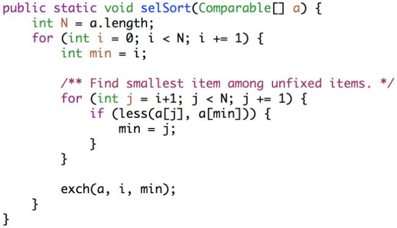

Sorting IV - Algorithmic Bounds
- What is the theoretical bound on a sorting algorithm?
- Let there be some Ultimate Comparison Sort (UCS)
- We know the upper bound on UCS is
O(NlogN) , as there are algorithms such as merge sort that exist that have this worst case runtime - We know the lower bound on UCS is at least
Ω(N) , as we have to go through each of ourN elements once at least - Question: how tight can we make these bounds?
Aside: Sorting boxes
- Let us have three boxes, which contain either a puppy (lightest), cat (medium weight), or dog (heaviest)
- The only way we can tell what animal is in which box is by weighing two boxes against each other on a scale
- How many times do we need to use the scale to determine for sure what animal is in each box?
- We can analyse this with a binary decision tree, as shown below:
- This tree shows that for
N=3 elements, at most three comparisons tells us the order - What about for
N=4 elements?- If
N=4 , there areN!=4!=42 possible permutations - Putting these permutations in a binary decision tree gives a structure of height
lg(24)=log2(24)≈5 - The height of the decision tree (we round up) tells us the number of comparisons needed, so for
N=4 , we need at most5 comparisons
- If
- Generalize, how many comparisons for
N elements?- We have
N! permutations, and the height of the decision tree for these permutations tells us the number of comparisons we need - Thus the number of comparisons for
N elements has the lower boundΩ(lgN!)
- We have
- Connection to sorting: comparing the animals is exactly analagous to comparing the elements of a sequence to sort, and thus the upper bound on number of comparisons to determine the order of
N elements is also the upper bound on the number of operations to sortN elements
Math to get Equivalent Lower Bound
- We will now derive an equivalent expression for
Ω(logN!) - First we want to show
N!∈Ω(N2N2) - This is equivalent to saying
N!≥N2N2 - This is quite obvious:
10!=10∗9∗8∗7∗6∗5∗...∗1 55=5∗5∗5∗5∗5 - The
N! term is clearly larger, which shows this expression
- This is equivalent to saying
- Now given the first expression, show
log(N!)∈Ω(NlogN) - We have that
N!≥N2N2 - Taking logarithm of both sides gives:
log(N!)≥N2log(N2) - Discarding coefficients and constants, we have:
log(N!)≥Nlog(N) - This shows that
log(N!)∈Ω(NlogN)
- We have that
- Now, we want to show
Nlog(N)∈Ω(logN!) log(N!)=log(N)+log(N−1)+log(N−2)+ ... +log(1) Nlog(N)=log(N)+log(N)+log(N)+ ... +log(N) - As the latter is bigger than the former, we have that
Nlog(N)∈Ω(logN!)
- We have now shown that
log(N!)∈Ω(NlogN)∧Nlog(N)∈Ω(logN!) - This implies that both functions grow at the same rate! More formally:
log(N!)∈Θ(NlogN) Nlog(N)∈Θ(logN!) - Thus:
Θ(NlogN)=Θ(logN!)
Theoretical Bound on Sorting
- From the first section above, we have that the upper bound on some ultimate sort UCS is
O(NlogN) - In the second section, we showed that the lower bound is
Ω(N!) - We just showed in the third section that the lower bound is equivalent to
Θ(NlogN) - Thus UCS is both upper bounded and lower bounded by
Θ(NlogN) - Thus a sorting algorithm can't asymptotically be better than
Θ(NlogN) - Next lecture: how to sort in
Θ(N) time (not impossible, we just can't compare every element)
Misc.
- Unrelated to rest of lecture
- How do we get random numbers?
- Record random stuff, like room noise or various waves of light
- System clock can also be used, but issue of poor granularity; used more often as a random number seed
- Best approach: rely on pseudorandomness
- Example: multiplicative overflow
- Crude random number generator: start from some random number seed, and multiply the number repeatedly by a constant again each time we want to generate the next random number
- Works because integers have a fixed size, so when we go over the integer is truncated and we get pseudorandomness
- This is a very crude algorithm, but it represents the basic idea
Sorting Algorithm Implementations:
Utility methods:
Selection sort:

Insertion sort:
Merge sort: